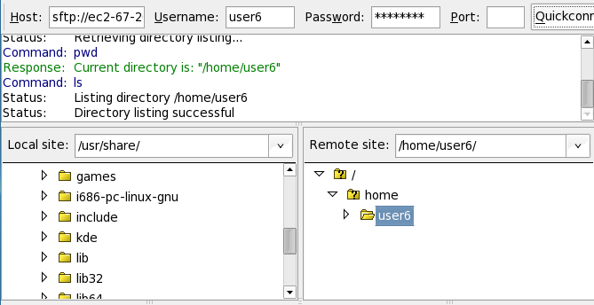

Transferring Files to the StarHPC Remote Cluster
The following guides explain how to transfer files to
the StarHPC remote cluster using FileZilla:
Windows
If you're on Windows, you can use FileZilla to
transfer files to the StarHPC remote cluster.
- Download and install FileZilla for windows from
here.
- Open FileZilla by going to Start → Programs →
FileZilla Client → FileZilla.
- Once FileZilla opens, there will be a
“QuickConnect” toolbar under the file menu. Fill in
the $hostname, $username and $password from
here. Fill in 22 for the port and press
“QuickConnect”.
- After connecting you should see two file
explorers side by side; one for your local machine
and your home folder on the StarHPC remote cluster
(ie /home/$user).

- You can transfer files to and from by dragging
and dropping them to the appropriate file explorer.
Mac
Filezilla also has a mac version. Below are general
instructions for installing FileZilla 3 on either an
Intel or PPC based mac.
- If you are using an Intel Mac: Download
FileZilla_3.0.5.2_i686-apple-darwin8.app.tar.bz2 from
here.
- If you are using a PowerPC Mac: Download
FileZilla_3.0.5.2_powerpc-apple-darwin8.app.tar.bz2
from
here.
- Open the file by double clicking the icon on your
desktop. The file should extract and put a red “F”
icon on your desktop. Double click this icon to start
FileZilla.
- Once FileZilla opens, there will be a
“QuickConnect” toolbar under the file menu. Fill in
the $hostname, $username and $password from
here. Fill in 22 for the port and press
“QuickConnect”.
- After connecting you should see two file
explorers side by side; one for your local machine
and your home folder on the StarHPC remote cluster
(ie /home/$user).
- You can transfer files to and from by dragging
and dropping them to the appropriate file explorer.
Linux
Filezilla also has a Linux version. Below are general
instructions for installing FileZilla 3 in your home
folder on Linux.
- Download FileZilla_3.0.5.2_i586-linux-gnu.tar.bz2
from
here.
- Open a terminal and change directories to where
you downloaded the file:
cd /location/of/file/
- Next extract the file by running:
tar xvjf FileZilla_3.0.5.2_i586-linux-gnu.tar.bz2
-C ~/
This will
create a FileZilla3 folder in your home
folder.
- Change to the filezilla bin folder:
cd ~/FileZilla3/bin
- Run filezilla:
./filezilla
- Once FileZilla opens, there will be a
“QuickConnect” toolbar under the file menu. Fill in
the $hostname, $username and $password from
here. Fill in 22 for the port and press
“QuickConnect”.
- After connecting you should see two file
explorers side by side; one for your local machine
and your home folder on the StarHPC remote cluster
(ie /home/$user).
- You can transfer files to and from by dragging
and dropping them to the appropriate file explorer.
- If at any time you want to remove FileZilla
simply delete the FileZilla folder from your home
directory.